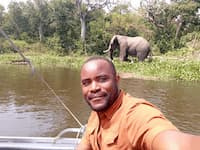

Mubangizi Benedicto WDD130

Hello! Welcome to my platform! I am called Mubangizi Benedicto, a professional, passionate safari, tour and driver guide, founder of Banith Safaris Africa Ltd based in Uganda. Banith Safaris Africa is a travel agency that organizes game-drive adventures, gorilla tracking, cultural experiences, and beach holidays across East and central Africa. I live in Kampala, Uganda. I am a passionate, honest and transperent local guide operating in Uganda, Kenya, Tanzania, Rwanda, Zambia and Botswana. Are you planning for a lifetime safari adventure in Africa? Contact me! I will be glad to help you in the planning process and take you around for your forever memories.